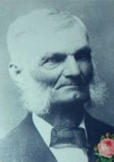
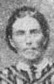

GMBH Tree - Family Card
GMBH Tree - Family Card
Ambroise Denommé(28 Jul 1801 - 1861)Jean-Baptiste Ducharme(28 Feb 1814 - 19 Mar 1878)
Marguerite Robillard(3 Aug 1799 - Sep 1858)Veronique Tessier(24 Jan 1811 - 22 Dec 1876)
m. 28 Apr 1856, St-Pierre-aux-Bouleaux, St-Joseph, Hay Twp, Huron Co, Ontario, Canada


b. 2 Mar 1832, St-Paul, Joliette, Quebec, Canada
d. 3 Mar 1916, St. Joseph, Huron Co, Ontario, Canada
br. St. Joseph, Huron Co, Ontario, Canada
occ.
edu.
rel.
bp. 4 Mar 1832, St-Paul, Joliette, Quebec, Canada
cen.

b. 2 Dec 1837, Ste-Elisabeth, Berthier, Quebec, Canada
d. 17 Jan 1885, St. Joseph, Huron Co, Ontario, Canada
br. St. Joseph, Huron Co, Ontario, Canada
occ.
edu.
rel.
bp.
cen. 1851, Hay Twp, Huron Co, Ontario, Canada
Children
Joseph Denomme(8 May 1857 - 12 Sep 1909)
Marie Denomme(17 Sep 1858 - 22 Aug 1945)
Caroline Dénommé(15 Oct 1860 - 13 Mar 1887)
Cyril Denomme(Feb 1862 - 6 Mar 1939)
Rosalie Denomme(7 Apr 1865 - 19 Jan 1922)
Pierre Louis Denomme(5 Nov 1866 - 7 Feb 1922)
Celina Denomme(1869 - )
Maxime Denomme(2 Jan 1870 - 27 Apr 1950)
Nelson (Narcisse) Denomme(26 Dec 1872 - 7 Jan 1920)
Virginie Denomme(15 Jan 1874 - 17 Jan 1967)
> Philip L. Denomme(28 Feb 1876 - 28 Jun 1943)
Vitaline Denomme(24 May 1879 - 2 Mar 1955)
Josephine Denomme(1 Jun 1881 - 26 Nov 1968)